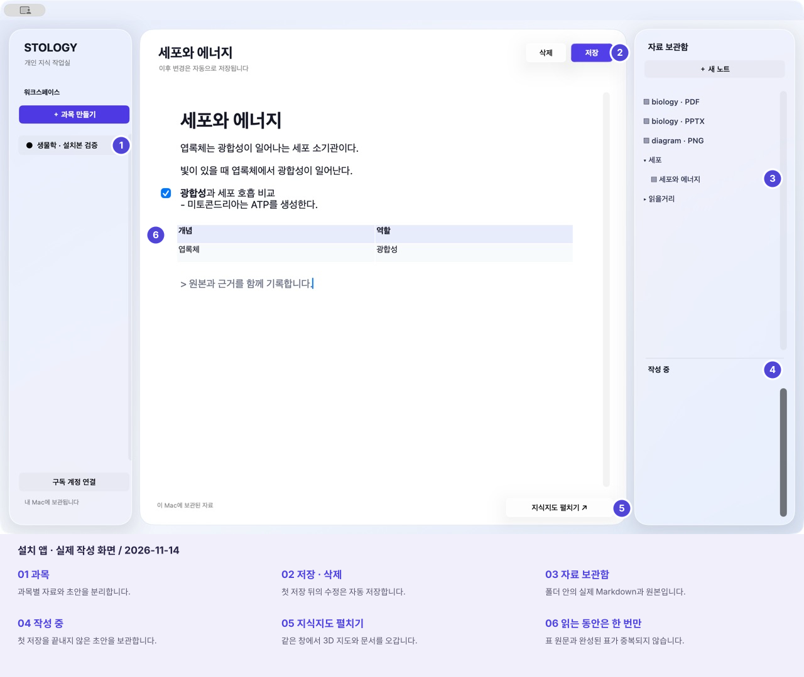
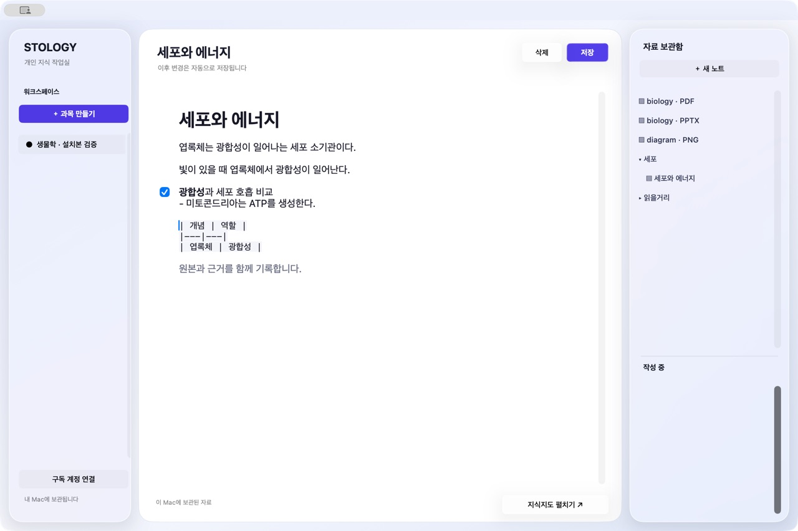
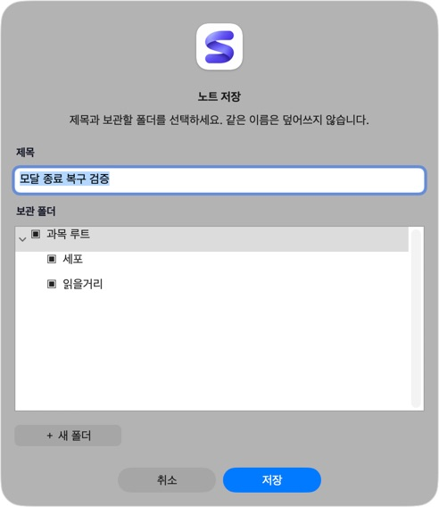
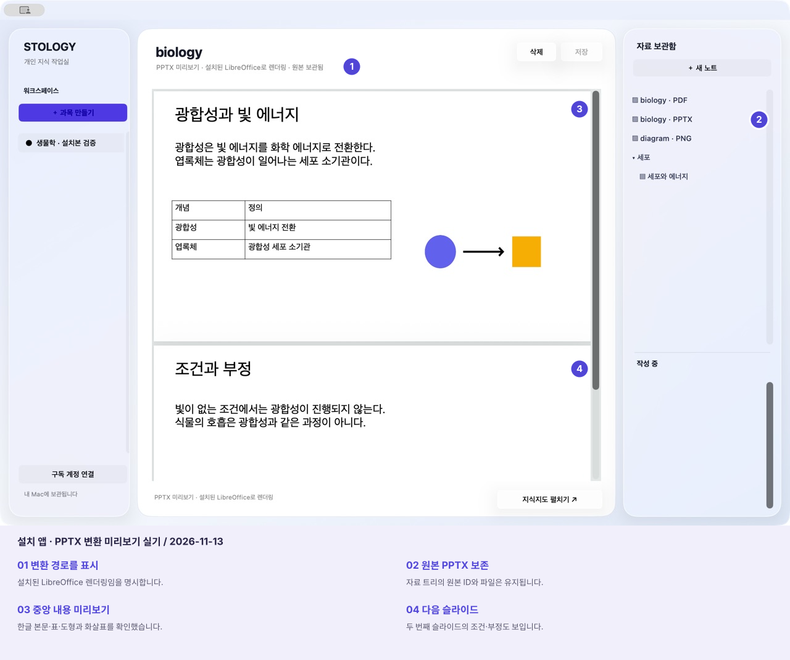
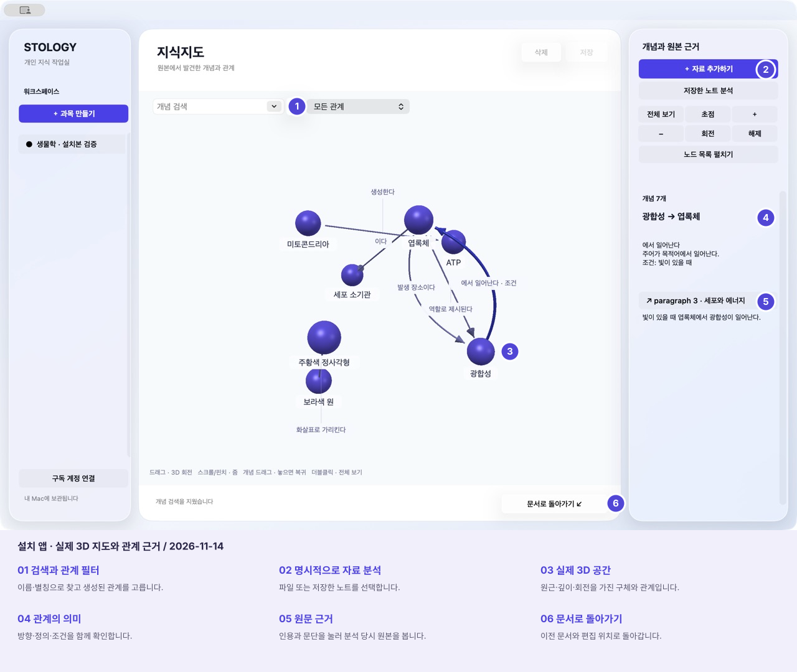
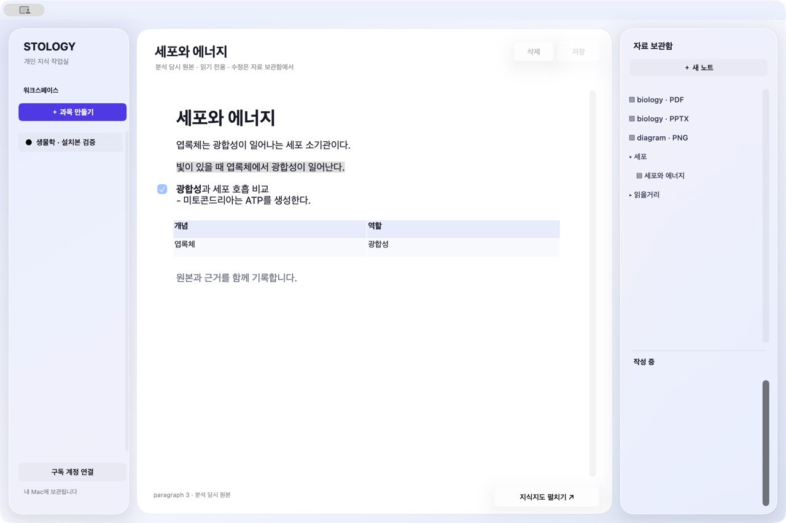

초안
입력 유휴 후 자동 보관하고 전환 전에 저장합니다. 작성 중 항목을 클릭하면 다시 이어 쓸 수 있습니다. 빈 문서는 목록에 쌓지 않습니다.
과목마다 생각을 적고 원본을 모으세요. 개념과 관계를 펼친 뒤, 그 관계가 나온 원문으로 돌아갈 수 있습니다.
Apple Silicon · 로컬 저장 Codex / Claude 구독이 앱은 본인 Mac 테스트용 서명 빌드입니다. Apple 공증 완료 배포본이 아닙니다. 구현·자동 검사와 실제 구독·한글 입력·설치 앱 검증은 구분하며, 미확인 항목은 검증 기록에서 확인하세요.
Stology-Local-arm64.dmg 안의 Stology Local.app을 Applications로 옮깁니다. 원본 저장소의 빌드 결과는 local-app/dist/에 있습니다.앱의 도움말 → 오프라인 가이드북에서도 이 문서를 열 수 있습니다. 앱 시작에 구독 연결은 필요하지 않습니다. 자료 분석을 처음 시작할 때 공급자를 선택합니다. 공식 실행 파일은 앱 안에 기본 포함하지 않습니다.
자료가 전송됩니다. 선택한 파일에서 추출한 텍스트와 분석에 필요한 원본 이미지가 선택한 구독 공급자에게 전송됩니다. 로컬 저장은 “모든 분석이 오프라인”이라는 뜻이 아닙니다.
| 상태 | 의미 |
|---|---|
| 설치됨 | 공식 실행 파일을 찾았습니다. 로그인 또는 분석 성공을 뜻하지 않습니다. |
| 로그인됨 | 공식 도구가 인증을 확인했습니다. 구독 한도나 네트워크에 따라 호출은 실패할 수 있습니다. |
| 실제 분석 성공 | 해당 실행에서 구조화 응답과 Rust 검증을 마쳤습니다. 개념 추출 품질 평가는 별도입니다. |
구독 연결이 실패해도 API 과금으로 자동 전환하지 않습니다. 공식 실행 조건에 따라 변경하지 않은 Claude Code를 실행하고, 사용자가 공식 인증으로 자신의 구독을 사용합니다. 앱이 Claude.ai 로그인 화면을 따로 만들거나 토큰을 수집·저장·중계하지 않습니다. 이 빌드는 개인 Mac 시험용입니다.
노트 상단의 다이어그램 버튼을 누르고 도형이나 화살표를 끌어 그리세요. 도형을 더블클릭하면 글자를 넣을 수 있습니다. 상단의 ‘제목 없음’을 클릭해 이름을 붙일 수 있습니다. 완료를 누르면 커서 자리에 그림이 들어갑니다. 빈 캔버스에서 완료하면 노트로 돌아갑니다. 노트의 그림을 더블클릭하면 다시 편집할 수 있습니다.
화면 영역을 설명하는 SVG 도식입니다. 실제 앱 캡처와 구분합니다.
입력 유휴 후 자동 보관하고 전환 전에 저장합니다. 작성 중 항목을 클릭하면 다시 이어 쓸 수 있습니다. 빈 문서는 목록에 쌓지 않습니다.
첫 저장 뒤에는 자료 트리에 나타납니다. 이후 편집은 자동 저장되며 저장 버튼과 ⌘S로 즉시 저장할 수 있습니다.

읽는 동안 표는 완성된 모양으로 한 번만 표시됩니다. 표 안을 클릭해 편집하면 해당 블록의 Markdown 원문만 보여 주고 미리보기는 숨깁니다. 다른 문단으로 이동하면 다시 표 모양으로 돌아옵니다.

자료 폴더를 우클릭해 새 노트를 선택하면 그 폴더에 파일이 만들어지고 중앙에서 열립니다. 제목을 입력하고 Enter를 누르면 본문을 작성할 수 있습니다. Esc는 기본 제목을 유지합니다. 같은 이름은 새 노트 2처럼 구분하며, 내용이 비어 있어도 직접 만든 파일은 유지됩니다. 이후 변경은 자동 저장됩니다. 이 노트는 작성 중 목록에 중복 표시되지 않습니다.
문서 오른쪽 위 저장을 누르고 제목과 보관 폴더를 고릅니다. 저장 창에는 제목과 펼치기·접기가 가능한 폴더 트리가 함께 보입니다. 현재 과목의 루트가 기본값입니다. 저장 창의 + 새 폴더로 폴더를 만들면 트리에 즉시 나타나고 선택됩니다. 취소하면 초안으로 남습니다. 같은 이름을 덮어쓰지 않으며 구분되는 이름을 사용합니다.

별도 문서: 단축키와 Markdown 입력 전체 보기 →
줄 시작에서 - ·* ·+ 를 입력하면 불릿, 숫자. 를 입력하면 들여쓴 번호 목록이 됩니다. Tab은 불릿 기호와 본문을 함께 한 단계 들여쓰고, Shift+Tab은 한 단계 내어씁니다. Enter는 같은 깊이의 다음 항목을 만듭니다. 빈 하위 항목에서 Enter는 한 단계 내어쓰고, 최상위의 빈 항목에서 Enter는 목록을 끝냅니다. 항목 시작에서 Backspace는 목록 형식을 해제합니다.
> ·| ·" 는 인용입니다. 세로 인용선이 나타나며 Enter는 일반 문단으로 나가고 Shift+Enter는 인용 안에서 줄을 바꿉니다. 표 전체 붙여넣기는 인용으로 바꾸지 않습니다.
| 선택한 텍스트 서식 | Mac 단축키 |
|---|---|
| 굵게 / 기울임 / 밑줄 | ⌘B / ⌘I / ⌘U |
| 취소선 / 인라인 코드 | ⌘⇧S / ⌘E |
| 링크 추가 | ⌘K → URL 입력 |
같은 텍스트를 선택하고 서식 단축키를 다시 누르면 해제됩니다. 밑줄은 Markdown 안에 <u>텍스트</u>로 저장합니다. ⌘X는 잘라내기입니다. 코드 본문과 표 원문에서는 서식 단축키를 적용하지 않습니다.
⌘⌥0은 일반 문단, ⌘⌥1·2·3은 제목, ⌘⌥4는 체크리스트, ⌘⌥5는 불릿, ⌘⌥6은 번호 목록, ⌘⌥8은 코드 블록으로 바꿉니다. 노션 공식 단축키 중 현재 편집기에서 지원하는 서식과 블록 전환을 적용했습니다.
제목, 강조, 목록·체크리스트, 인용, 링크·이미지, 코드블록, 표를 UTF-8 Markdown으로 저장합니다. 저장한 노트는 다른 Markdown 도구로도 읽을 수 있는 실제 파일입니다. 지원 문법의 원문 보존과 화면 서식 완성도는 별개로 검증합니다.
# 광합성
빛 에너지를 **화학 에너지**로 바꾸는 과정.
- [ ] 엽록체 구조 다시 보기
> 출처와 조건을 함께 기록하기
| 개념 | 설명 |
| --- | --- |
| 엽록체 | 광합성이 일어나는 세포 소기관 |현재 편집기에서 이미지 링크 원문은 보존하며, 입력 중 원격 이미지 URL을 가져오지 않습니다. 인라인 미리보기는 접근 가능한 로컬 이미지에 적용하고 문서당 최대 8개·파일당 20MiB로 제한합니다. 표 미리보기는 최대 100행·16열이며 이를 넘는 원문도 Markdown으로 보존합니다.
저장만으로 분석하지 않습니다. 이 노트를 지도에 반영하려면 자료 트리에서 저장한 노트를 우클릭해 분석을 선택하세요.
이미지를 복사한 뒤 ⌘V를 누르세요. 아직 저장하지 않은 초안에서도 이미지 옆에 바로 필기를 이어 쓸 수 있습니다. 네 모서리나 하단 가장자리에 마우스를 올리면 방향에 맞는 크기 조절 커서가 표시됩니다. 이곳을 드래그하면 비율을 유지하며 크기가 바뀌고, 이미지나 다이어그램의 가운데를 잡아 상하좌우로 옮길 수 있습니다. 다른 문단에 붙을 때는 안내선이 나타나고, 끌고 있는 동안 그림 주변으로 글이 흐릅니다. 원하는 배치가 보이면 놓으세요.
이미지나 다이어그램을 클릭하면 그림 바깥에 선택 테두리와 크기 조절 손잡이가 나타납니다. 우클릭하면 이미지에서는 삭제, 다이어그램에서는 편집과 삭제를 선택할 수 있습니다. 삭제나 배치 변경은 ⌘Z로 되돌릴 수 있습니다. 이미지는 과목의 이미지 폴더에 자동 보관됩니다. 노트에서 지워도 실행 취소와 다른 참조를 위해 파일은 남겨 둡니다. 다른 Markdown 앱에서도 이미지를 열 수 있지만 크기·둘러쓰기 배치는 Stology에서 적용됩니다.
자료 트리에서 파일을 우클릭해 분석을 선택하세요. 저장한 노트·PDF·PPTX·이미지와 PPTX에서 만든 PDF 모두 같은 메뉴를 사용합니다. 전송 안내와 공급자 연결을 확인한 뒤 최신 편집·필기를 저장하고 그 시점 파일을 분석합니다.
자료 상태는 미분석 · 분석됨 · 갱신 필요로 구분됩니다. 현재 내용의 분석이 끝났거나 다른 분석이 진행 중이면 분석 메뉴가 비활성화됩니다. 한 번에 한 작업이 실행되며 취소할 수 있습니다. 실패해도 작업 파일과 이전 지도는 유지됩니다. 분석 중 편집·필기로 내용이 바뀌면 그 결과를 반영하지 않으므로 최신 내용으로 다시 요청하세요.
| 형식 | 읽는 내용과 한계 |
|---|---|
| MD | 문단별 텍스트. 중앙 편집기로 열립니다. 기존 저장 노트를 선택하면 중복 파일을 만들지 않습니다. |
| 페이지별 텍스트, 스캔 페이지의 시스템 OCR, 필요한 페이지 이미지. 암호·손상 여부를 확인합니다. | |
| PNG / JPEG / HEIC | 시스템 디코딩·OCR와 실제 이미지 입력. OCR 성공만으로 도표 이해를 보장하지 않습니다. |
| PPTX | 슬라이드 순서·본문·발표자 노트·표·내장 이미지를 추출합니다. 이미 설치된 LibreOffice가 있으면 내부 PDF 변환 미리보기를 먼저 사용하고, 없으면 시스템 Quick Look을 사용합니다. 변환기를 앱에 포함하거나 자동 설치하지 않습니다. 복잡한 SmartArt·배치 또는 변환기 미설치 시 PDF로 내보내 입력하세요. |

PPTX 변환 미리보기: 현재 시험 Mac에서 일부 시험 PPTX의 Quick Look이 내용을 표시하지 못해 선택적 보완 경로를 추가했습니다. 현재 구현은 설치된 LibreOffice가 있으면 변환 경로를 먼저 사용합니다. 없으면 Quick Look을 사용하며 파일에 따라 아이콘만 보일 수 있습니다. 미리보기용 PDF는 내부 캐시이며 원본 PPTX와 자료 ID는 유지됩니다. 필기를 시작해 자료로 등록한 PDF는 별도 작업 파일입니다. 화면에 변환 미리보기라고 표시합니다. 글꼴·배치가 PowerPoint와 완전히 같지는 않을 수 있습니다. 변환은 비동기로 진행하며 취소·제한 시간을 적용합니다.
자료 트리에서 PDF를 열면 읽기 · 선택 · 영역 선택 · 강조 · 영역 · 박스 · 메모 · 펜 아이콘 도구를 사용합니다. 모든 도구 아이콘에 마우스를 올리면 버튼 위 말풍선에 짧은 설명이 표시됩니다. 읽기 모드에서 텍스트를 선택한 뒤 강조를 누르면 텍스트 하이라이트를 만듭니다. 영역·박스·펜은 페이지에서 드래그하고 메모에는 글을 입력합니다. 박스와 영역은 클릭만 하면 생성되지 않습니다. 선택 도구로 필기를 이동하고 오른쪽 아래 모서리로 크기를 바꿉니다. 메모 작성을 마치면 선택 영역이 글 크기에 맞춰 줄어듭니다. 메모를 더블클릭하면 글을 다시 편집합니다. 기존 메모도 다시 편집을 마치면 글 크기에 맞춰집니다. 여러 필기를 지우려면 빈 점선 사각형(영역 선택)을 누르고 드래그해 필기를 둘러싸세요. 선택 사각형 안에 완전히 들어간 필기가 함께 선택됩니다. 선택한 필기는 Delete·백스페이스 또는 휴지통으로 한꺼번에 삭제하고, ⌘Z로 한꺼번에 복원합니다. 메모의 글을 편집 중일 때는 글자만 지웁니다. 실행 취소·다시 실행 아이콘으로 변경을 되돌릴 수 있습니다.
필기는 작업 PDF에 자동 저장하며 ⌘S로 즉시 저장을 요청합니다. 저장 중과 PDF에 저장됨을 구분해 확인하세요. 공유하려면 파일 메뉴의 PDF 공유…를 선택하세요. 최신 필기를 저장한 뒤 macOS 공유 창을 엽니다. 현재 PDF 저장 한도는 256 MiB이며, 분석 한도 100 MiB·100쪽과는 별개입니다. 한도를 넘으면 기존 PDF를 교체하지 않고 저장 실패를 알립니다. 분석 당시 근거 PDF는 읽기 전용이므로 자료 트리의 현재 PDF에서 필기합니다. 도구별 실기와 남은 검증 범위는 PDF 필기 검증 기록을 참고하세요.
PPTX를 우클릭해 PDF로 필기를 선택하면 같은 폴더에 별도 PDF를 만들고 그 PDF를 엽니다. 설치된 LibreOffice가 필요하며 원본 PPTX는 유지됩니다. 같은 이름의 PDF가 있으면 번호를 붙여 보존하고, 이후에는 연결된 필기 PDF를 다시 엽니다. PPTX가 변경돼도 기존 필기 PDF를 덮어쓰지 않습니다. 변경한 PPTX를 다시 변환하려면 새 PDF로 변환을 선택하세요. 기존 필기 PDF는 남고 새 PDF는 미분석 자료로 등록됩니다. 분석은 각각 요청합니다.
자료 트리는 실제 작업 파일과 생성한 PDF를 표시합니다. 분석문이나 중간 추출 파일은 트리에 만들지 않습니다. 같은 자료의 동일 버전 분석 결과는 중복 반영하지 않습니다.
“A와 B가 같은 문서에 있다”만으로 관계를 만들지 않습니다. 주장을 뒷받침하는 원문 위치를 대조하고, 기존 개념과 같은 의미라고 확인할 때만 ID를 재사용합니다. 같은 이름의 다른 뜻, 원인과 상관, 부정과 조건을 구분합니다.
대표 이름·별칭·짧은 정의를 가진 개념, 연결어·의미·방향을 가진 관계를 저장합니다. 관계 종류는 고정 목록으로 제한하지 않습니다.
어떤 개념이 어떤 관계로 연결되는지에 조건과 부정을 붙입니다. 인용·페이지·슬라이드·문단·이미지 영역으로 출처를 이어 둡니다.
상충하는 자료는 각 출처와 조건을 남깁니다. 검증 실패는 “빈 지도 생성 성공”이 아닙니다. 원본을 보존하고 오류를 표시합니다.
실제 설치 앱에서 3D 원근·두 축 회전·버튼/휠/+ 키 줌·0 키 전체 보기·검색 선택·관련 개념 재초점·임시 드래그 후 복원·관계 근거 확인을 관찰했습니다. 물리 핀치, 모든 키 조합, 대규모 목록 페이지, 동작 줄이기·VoiceOver·장기 메모리는 별도 검증 대상입니다. 기존 동작·소스·로컬 구현·검증 대응표에서 항목별 증거와 남은 범위를 확인하세요.
지도에서 회전·확대/축소·초점·전체 보기를 사용하고, 검색이나 노드 목록으로 개념을 찾습니다. 관계 필터는 실제 추출된 관계 사전으로 만들어집니다. 노드를 임시로 옮기거나 빈 공간에서 선택을 해제할 수 있습니다.

| 근거 종류 | 확인 방법 |
|---|---|
| 해당 원본의 근거 페이지로 이동합니다. | |
| MD | 근거 구절을 찾아 선택합니다. 현재 편집본과 분석 당시 버전이 다르면 구버전 근거임을 구분합니다. |
| PPTX | 원본 미리보기와 슬라이드 번호를 확인합니다. 공개 미리보기 API가 지원하지 않는 슬라이드 직접 이동을 제공한다고 표시하지 않습니다. |

paragraph 3의 구절로 이동했습니다. 상단의 분석 당시 원본·읽기 전용 안내와 선택된 문장을 확인하세요. 편집은 자료 보관함의 현재 노트에서 합니다.지도를 닫으면 이전 문서와 편집 위치로 돌아갑니다. 분석한 Markdown을 수정하거나 PDF에 필기해도 자동 재분석하지 않습니다. 구버전 근거·갱신 필요 상태를 확인하고 필요한 때 자료를 우클릭해 분석을 선택합니다.
자료가 여러 개면 파일마다 분석을 누르지 않아도 됩니다. 자료 탭의 ✦ 정리 제안을 열면 우측 상단에 전체 정리 버튼이 있습니다. 전체 정리는 새 자료와 바뀐 자료만 읽고, 여러 자료에 흩어진 같은 개념을 하나로 맞춘 뒤 단원과 연결을 만듭니다.
자료 탭에 지금 단계가 보입니다. 멈춤을 누르면 바로 멈추고, 이미 읽은 묶음은 보관합니다. 읽던 묶음은 이어서 정리할 때 다시 읽습니다. 이어서 정리를 누르면 남은 부분부터 이어 갑니다. 앱을 종료했다 다시 켜도 같습니다. 구독 사용 한도에 닿으면 같은 방식으로 멈추며 다른 공급자나 API 과금으로 바꾸지 않습니다. 정리가 끝나기 전에는 지도가 바뀌지 않고 끝나면 한 번에 반영합니다.
정리 중에 학습 도우미에 질문하면 지금 단계가 끝난 뒤 답변이 먼저 나옵니다. 기다리기 어렵다면 정리 멈추고 바로 질문을 누르세요.
끝나면 늘어난 개념·연결 수와 하나로 합친 개념 수를 알려 줍니다. 어떻게 정리했나요에서 단계별 모델과 호출 수, 공급자가 알려 준 토큰 수를 확인합니다. 정리한 뒤 내용을 고친 자료는 정리 필요로 표시되고 다음 과목 정리에서 다시 읽습니다.
긴 PDF는 24쪽 이하 묶음으로 고르게 나눠 읽고, 묶음마다 주장에 붙은 인용을 원문과 대조합니다. 맞지 않는 주장은 지도에 넣지 않습니다. 맞지 않는 주장이 많은 자료는 한 등급 높은 모델로 한 번 다시 읽고, 그래도 많으면 정리 품질 낮음으로 표시합니다. 그런 자료는 우클릭 메뉴나 개념 카드의 꼼꼼하게 다시 정리로 다시 읽을 수 있습니다.
확인 창의 이 과목의 정리 지침에 “정의는 교재 표현 그대로”처럼 적어 두면 그 과목을 정리할 때마다 함께 전달합니다.
| 보이는 것 | 뜻과 할 수 있는 일 |
|---|---|
| 단원 목록과 색 | 개념을 단원으로 묶고 단원마다 색을 줍니다. 단원을 누르면 그 단원만 봅니다. |
| 실선 · 점선 | 실선은 자료에 적힌 연결, 점선은 정리하며 이은 연결입니다. |
| 연결 종류 | 종류 · 구성 · 선행 · 원인 · 대조 · 예시 · 적용 · 관련 여덟 가지로 거릅니다. |
| 개념 카드 | 정의와 “A는 B의 한 종류예요” 같은 문장으로 연결을 읽습니다. 점선 연결에는 이은 이유가 붙고 이 연결 숨기기 · 다시 보이기를 쓸 수 있습니다. |
| 배운 곳 | 그 개념이 나온 자료와 쪽을 누르면 분석 당시 원본으로 이동합니다. |
| 하나로 합친 이름 | 다른 자료의 같은 개념을 합친 기록입니다. 잘못 합쳤다면 따로 떼기를 누르세요. 다음 정리에서도 합치지 않습니다. |
왼쪽 아래 AI 설정에서 기본 정리 방식, 대화 정리 방식, 뒤에서 쓰는 양, 이번 주 사용량을 봅니다. 정리 방법(스킬)은 앱에 들어 있습니다. 스킬 폴더 열기로 사본을 만들어 고치면 고친 방법을 쓰고, 기본값으로 되돌리기는 고친 폴더를 옆에 보관한 뒤 기본 방법으로 돌아갑니다. 단계별 모델을 직접 고를 수도 있습니다.
확인한 범위 · 2026-11-18: 설치 앱에서 Codex 구독으로 PDF 11개(376쪽)를 정리해 개념 359개 · 연결 431개 · 단원 12개를 만들고 멈춤 · 이어서 정리 · 따로 떼기 · 내보내기를 직접 확인했습니다. Claude 구독으로는 PDF 2개(39쪽)를 꼼꼼하게 정리하며 24쪽 묶음 읽기, 멈춤과 앱 재시작 뒤 이어서 정리, 정리 중 질문을 확인했습니다. 구독 한도에 닿는 상황과 Antigravity는 가짜 CLI 자동 시험으로만 확인했습니다. 정리 품질은 측정하지 않았습니다. 기록은 저장소의 app/qa/runs/subject-ontology-2026-11-18/에 있습니다.
학습 도우미와 나눈 대화 가운데 다시 볼 답을 노트로 남길 수 있습니다. 끝난 답 아래에 버튼 세 개가 있습니다.
| 버튼 | 하는 일 | AI 호출 |
|---|---|---|
| 나중에 정리 | 대화가 끝난 뒤 정리할 답으로 표시합니다. 다시 누르면 표시를 지웁니다. | 나중에 한 번 |
| 노트로 정리 | 이 답을 지금 노트 초안으로 정리합니다. | 한 번 |
| 그대로 저장 | 질문과 답을 그대로 노트로 저장합니다. | 없음 |
초안과 후보는 자료 탭 파일 검색 오른쪽의 ✦ 버튼에 모입니다. 제안이 있으면 버튼 오른쪽 위에 개수가 뜨고, 누르면 버튼 아래로 정리 제안 창이 열립니다. 창 제목 옆에는 제안 수가 3개처럼 표시됩니다. 창 바깥을 누르면 닫힙니다. 처음 열면 이 창이 무엇인지 알려 주는 안내가 한 번 보이고, 알겠어요를 누르면 다시 나오지 않습니다.
| 꼬리표 | 뜻 | 버튼 |
|---|---|---|
| 초안 | AI 답변을 정리해 달라고 해서 만든 노트입니다. | 등록 · 수정 · 삭제 |
| AI 초안 | 표시해 둔 답이나 여러 번 물어본 내용을 AI가 알아서 노트로 만든 것입니다. | 등록 · 수정 · 삭제 |
| 정리 전 | 남길 만한 답이지만 아직 AI를 부르지 않은 후보입니다. 초안 만들기를 누르면 그때 초안을 만듭니다. | 초안 만들기 · 삭제 |
삭제는 창 안에서 한 번 더 묻고 지웁니다.
등록하면 과목의 학습도우미 정리 폴더에 노트가 생깁니다. 등록하기 전에는 자료와 지도에 들어가지 않습니다. 등록한 노트는 다음 과목 정리에서 다른 자료처럼 읽히고, 개념 카드의 배운 곳에 내 질문에서로 표시됩니다. 삭제하면 보관해 둔 대화 사본도 지웁니다.
앱은 자기 기록만으로 남길 만한 답을 가립니다. 이 단계에서는 AI를 부르지 않습니다. 같은 질문을 두 번 이상 물었거나, 나중에 정리로 표시했거나, 같은 과목 개념을 두고 질문이 세 번 이상 이어지면 강한 신호입니다. 과목 개념이 질문에 나오거나 답을 복사하면 약한 신호로 후보 줄만 남깁니다. 짧은 답과 과목과 무관한 요청은 넘어갑니다.
| 방식 | 뒤에서 하는 일 |
|---|---|
| 끔 | 없습니다. 직접 표시한 답만 후보로 남습니다. |
| 물어보고 | AI를 부르지 않고 후보 줄만 남깁니다. |
| 중요한 것만 알아서 | 강한 신호만 자동으로 초안을 만듭니다. |
방식을 정하지 않은 상태에서 처음 강한 신호가 생기면 이번만 정리 · 앞으로 중요한 것만 알아서 · 괜찮아요를 한 번 묻습니다. 이후에는 AI 설정 설정에서 바꿉니다.
자동 정리는 대화가 5분 동안 조용할 때, 과목을 옮길 때, 새 대화를 누를 때 그 대화의 대상을 한 번의 호출로 모아 노트를 많아야 세 개 만듭니다. 새 대화는 기록을 지우기 전에 대상을 따로 보관합니다. 뒤에서 하는 정리는 하루 상한(적게 5번 · 보통 20번 · 넉넉하게 50번)을 넘지 않고, 질문을 보내면 정리를 미루고 답변부터 합니다. 자동으로 만든 초안을 거의 등록하지 않으면 반복 질문과 표시한 답만 자동으로 정리하도록 좁히고 한 번 알립니다.
정리할 때는 고른 질문과 답, 과목의 개념 이름, 이미 있는 제안과 등록 노트의 제목만 그 대화를 나눈 AI에 한 번 더 보냅니다. 대화 전체나 자료 원문은 보내지 않습니다.
확인한 범위 · 2026-11-18: 설치 앱에서 Codex와 Claude 구독으로 처음 묻는 안내의 이번만 정리, 나중에 정리, 노트로 정리, 등록 · 버리기, 중요한 것만 알아서의 자동 초안, 등록한 노트가 과목 정리에 들어가 내 질문에서로 표시되는 것를 직접 확인했습니다. 5분 조용할 때와 과목을 옮길 때의 자동 정리는 Claude로, 새 대화 때의 자동 정리 · 그대로 저장 · 후보의 정리 · 열어서 고치기는 Codex로 확인했습니다. 끔 방식, 하루 상한, 좁히기 안내는 가짜 CLI 자동 시험으로만 확인했습니다. 지금의 ✦ 정리 제안 창(꼬리표 · 창 안 삭제 확인 · 처음 안내)은 임시 데이터 폴더의 가짜 제안으로 화면에서 확인했습니다.
~/Library/Application Support/Stology Local/
workspaces/<과목 ID>/files/ 실제 .md·작업 원본·필기 PDF
storage.sqlite 문서 메타데이터와 초안
pdf-journal.sqlite PDF 미반영 변경의 복구 기록
versions/ 분석 당시 불변 원본
… 그래프·작업·내부 캐시앱과 분석을 종료한 뒤 저장소 전체를 백업하면 원본과 메타데이터를 함께 보존할 수 있습니다. 일부 파일만 따로 옮기면 지도와 자료 연결이 어긋날 수 있습니다. 개발·QA는 STOLOGY_DATA_DIR로 별도 저장소를 사용합니다.
상단 삭제를 누르면 대상을 확인합니다. 확인 후 휴지통으로 옮깁니다. 해당 자료의 근거만 제거하고 다른 자료가 지지하는 관계는 유지합니다. 지연된 자동 저장이 삭제 파일을 되살리지 않도록 저장 버전을 확인합니다.
저장 실패는 성공으로 표시하지 않습니다. 디스크 공간과 접근 권한을 확인한 뒤 다시 저장하세요. 분석 실패 시에도 자료 트리에서 원본을 다시 열 수 있습니다. 분석 당시 원본 버전은 현재 작업 파일과 구분되어 과거 인용을 확인할 수 있게 합니다. 불변 사본은 명시적으로 분석을 요청한 버전만 보관하며 가져오기·열기·필기 저장 때마다 새 사본을 만들지 않습니다. 기존 분석 사본은 자동 삭제하지 않습니다. PDF 자체에 저장된 필기는 내부 필기 DB 없이도 남습니다. 저장 실패나 외부 변경 충돌이 나면 완료 표시를 기다리지 말고 원인을 확인하세요. 미반영 복구 기록을 임의로 삭제하지 마세요.
기준 구현은 Rust·objc2·AppKit입니다. PDFKit, Vision OCR, ImageIO, Quick Look 등 macOS 기능을 활용해 별도 브라우저·문서·OCR 런타임의 중복 탑재를 줄이는 방향입니다. 이것이 성능 우위를 이미 입증했다는 뜻은 아닙니다.
| 비교 | 판정 기준 |
|---|---|
| 선행 자격 | 동일 디자인, 한글 편집, 원본 미리보기, 지도 조작을 통과한 release 빌드 |
| 측정 | 실행 시간, 입력·프레임 지연, 유휴 CPU, 전체 관련 프로세스 메모리, 설치 크기 |
| 웹 전환 | 메모리 반복 측정 중앙값 10% 이상 감소 + 속도·CPU·크기 비악화 |
| 현재 해석 | 기능 동등성 미통과 비교판 수치는 진단용입니다. 최종 기술 우위는 유보합니다. |
작업 환경: Apple M4 MacBook Air / 16GB / macOS 26.5.1 / arm64. 측정별 자료 규모·빌드 조건·AI 프로세스 포함 여부는 별도 보고서에 적습니다. 10%는 정책 기준이며 달성 실적이 아닙니다.
마지막 교정 실행은 완료하지 못했습니다. 아래 이력에서 두 모드의 회전 증가량 차이와 웹 입력 대체 경로의 기록 누락을 발견해 소스를 교정했습니다. 교정 뒤 WebKit 준비·합성 입력·프레임 단계의 시간 초과가 반복되어 중단했으며 동일 workload의 유효 5회씩을 확보하지 못했습니다. 아래 수치를 최종 비교값으로 사용하지 않습니다.
교정 전 Swift AppKit과 WKWebView 비교판을 각각 5회 번갈아 실행한 이력입니다. 공용 1240×800 셸, 15,060바이트 한글 Markdown, 120개 개념·119개 관계·3종 관계 fixture, Swift 6.3.3 최적화 빌드입니다. 문서 서식과 검색·필터·목록·초점·드래그·근거 이동을 양쪽에 구현했습니다. 측정 중 실제 앱 조작을 중지하고 AI 프로세스는 실행하지 않았습니다.
| 교정 전 실행별 지표 중앙값 | Swift AppKit | WKWebView |
|---|---|---|
| 시작 → 콘텐츠 + 두 번째 갱신 callback | 412.66 ms | 585.06 ms |
| 관련 프로세스 합산 RSS | 121.72 MiB | 202.30 MiB |
| 짧은 유휴 구간 CPU 증분 | 0.00% | 0.00% |
| 합성 문자 삽입 → 두 번째 callback | 33.33 ms | 33.00 ms |
| 위 입력 p95 | 33.36 ms | 34.00 ms |
| 지도 회전 callback 간격 p95 | 16.67 ms | 17.00 ms |
최종 제품 기술 선택은 아직 미확정입니다. 입력은 문자 ‘가’를 프로그램으로 삽입한 합성 측정이며 물리 키보드·IME 지연이 아닙니다. 두 callback을 기다리는 정의상 약 33ms가 나오므로 그보다 작은 차이를 판단할 수 없습니다. 지도 수치는 display/rAF가 제공한 타임스탬프 차이이며 실제 callback 도착 또는 GPU 픽셀 표시 시각이 아닙니다. RSS의 공유 WebKit 프로세스 귀속과 physical footprint, 실제 Rust/Metal·Tauri 제품 동등성, 풍부한 이미지·표 표시, 비교판의 IME·시각 품질·설치 크기 검증이 남았습니다. 시험한 PPTX의 시스템 원본 미리보기 실패도 통과 전제를 충족하지 못합니다. 파일에 따라 동작이 다를 수 있습니다. 10% 기준 달성이나 네이티브 성능 우위를 선언하지 않습니다.
| 참고 | 채택 범위 |
|---|---|
| Tolaria | 실제 Markdown 파일·공식 CLI·인증 위임. AGPL 구현 코드는 복사하지 않습니다. |
| oh-my-pi | 작업 ID·진행·취소·수명주기 관리 원리. 전체 런타임은 넣지 않습니다. |
| LLM Wiki | 원본과 파생 지식 분리, 새 자료와 관련된 지식 갱신. 하나의 제품 구현으로 동일시하지 않습니다. |
| EDC · KGGen | 열린 관계 추출·의미 정의·표현 정리. 이름만으로 병합하거나 근거 없는 관계를 보충하지 않습니다. |
| iText2KG · LMKG | 자료 내부 추출 후 병합과 근거 추적 원리. 모든 참고 구현이 페이지·구절 수준 근거를 보장한다고 간주하지 않습니다. |
외부 코드의 정확한 버전·라이선스는 빌드의 라이선스 목록에 보관합니다. 아래 온라인 원문은 추가 참고용이며 이 가이드 본문과 도식은 네트워크 없이 읽을 수 있습니다.
| 상황 | 확인·복구 |
|---|---|
| CLI를 찾지 못함 | 연결 화면에서 선택한 공식 CLI를 설치합니다. 앱 패키지에 두 공급자가 기본 포함된 것은 아닙니다. |
| 인증 만료·구독 한도 | 공식 계정에서 인증·한도를 확인합니다. 사용 가능해진 뒤 명시적으로 다시 분석합니다. |
| 네트워크 오류·취소 | 원본은 트리에 남습니다. 연결을 복구하고 다시 시작하세요. 이전 지도는 유지합니다. |
| 손상·암호화·미지원 | 표시된 이유를 확인하고 정상 파일 또는 암호가 해제된 지원 형식으로 다시 입력합니다. |
| JSON·근거 검증 실패 | 미검증 결과를 지도에 반영하지 않습니다. 원본 위치·인용과 작업 오류를 확인한 뒤 재시도합니다. |
| PPTX 아이콘만 표시·변환 실패 | 설치된 LibreOffice가 있으면 변환 미리보기를 먼저 사용합니다. 없으면 Quick Look을 사용하고, 내용 표시 또는 변환이 실패하면 슬라이드를 PDF로 내보내 다시 입력하세요. 변환 여부와 배치를 직접 확인합니다. |
| 수정한 자료의 구버전 근거 | 현재 편집본과 분석 버전이 다릅니다. 수정 내용을 반영하려면 명시적으로 재분석합니다. |
| 저장 실패·외부 변경 충돌 | 편집 내용을 유지한 채 공간·권한과 다른 앱의 파일 변경 여부를 확인합니다. 충돌 상태에서는 PDF 게시를 중단합니다. 파일 메뉴의 PDF 저장 문제 해결…에서 내 필기를 별도 PDF로 저장하거나 버리고 다시 열기를 선택할 수 있습니다. 버리기는 미반영 필기를 폐기하므로 별도 저장이 필요한지 먼저 확인하세요. 저장 완료 표시와 실제 저장 파일을 함께 확인하세요. |
학습 완료·예정·숙련도, 팀, 채팅, 퀴즈, 리포트, 클라우드 동기화는 이 MVP에 포함하지 않습니다.
2026-11-15 PDF 필기·명시적 분석 구현 기록에서 구현·자동 검사·설치 완료, 실제 박스/메모/펜/영역 저장·강제 종료 복구·분석 상태·공유 선택기 확인 결과와 남은 IME/대규모 부하/호환성 검증을 확인하세요. 아래의 2026-11-14 화면과 검증은 이전 빌드의 기록이며 새 PDF 필기 실기를 대신하지 않습니다.
2026-11-14 설치 앱 직접 검증 기록에서 실제 조작·사용자 수동 보고·자동 검사와 남은 범위를 구분해 볼 수 있습니다.
로컬앱 QA는 80개 독립 케이스로 시작하며 초기값은 전부 미실행입니다. 기존 웹 QA ID와 Excel 실행 기록은 보존합니다. 실행 결과는 케이스 ID·빌드·시각·실제 관찰·증거와 함께 별도 기록합니다.
저장 버전·삭제 경합·중복·근거 검증 같은 규칙을 테스트합니다. 이것만으로 한글 IME나 실제 계정 분석을 통과시킬 수 없습니다.
설치 앱에서 과목 생성 → 작성·저장 → 원본 열기 → 구독 분석 → 지도 확장 → 근거 확인 → 재실행 보존을 관찰해야 완료입니다.
현재 빌드의 최종 통과·차단 목록은 함께 제공한 검증 보고서를 기준으로 합니다. 이 가이드의 흐름 설명이나 도식 자체는 실기 통과 증거가 아닙니다. 실제 로그인·이미지 분석·편집 동등성·성능 판정을 관찰하지 않은 항목은 미확인으로 유지합니다.
실제 설치 앱에서 과목 생성, 한글 Markdown 붙여넣기, 첫 저장 취소와 초안 유지, 새 폴더에 저장, 종료·재실행 후 동일 노트 복구를 관찰했습니다. 중간 검증 빌드에서 저장한 노트의 실제 구독 분석으로 개념 5개·주장 5개가 생성되었고, 근거를 선택해 불변 MD 원본의 해당 구절을 확인했습니다. 사용자는 별도로 설치 앱의 한글 조합·받침 수정·한영 전환·⌘Z가 정상이라고 직접 보고했습니다. 이 수동 확인은 화면 자동화 관찰 및 프로그램의 조합 텍스트 검사와 구분합니다. 이를 모든 형식·실패 분기의 통과로 확대하지 않습니다.
최종3D 지도를20회 열고 닫은 뒤 같은 문서로 돌아오는 것을 확인했습니다. 같은 프로세스의 RSS는106,368→108,816KiB였으며 이 한 번의 관찰을 장기 메모리 누수 부재로 해석하지 않습니다. 자료 선택 창이 열린 상태에서 앱 종료와 재실행 복구 경로도 별도로 점검했습니다.
글자 없는 동일 도형 이미지에 대해 Codex gpt-6.1-sol과 Claude claude-opus-5-5의 실제 구독 호출을 관찰했습니다. OCR 텍스트는 비워 두었고, 두 공급자 모두 왼쪽 원·오른쪽 사각형과 화살표 방향, 이미지 영역 근거를 구조화 응답으로 반환했습니다. 첫 Claude 시도의 구조 응답 실패는 별도 실패로 보존하고 수정 뒤 재실행 성공을 구분했습니다.
이 한 장에서는 두 도형의 누락·오병합·방향 반전·근거 없는 인과 추가가 관찰되지 않았습니다. 색상 표현은 달랐으며, 큰 자료집 품질 평가나 설치 앱 전체 흐름 통과를 뜻하지 않습니다. 기존 구독 인증은 확인했지만 새 브라우저 로그인·인증 만료·구독 한도·실제 네트워크 단절은 재현하지 않았습니다.
별도 생물학 fixture에서 Codex는 개념 8개·주장 9개를 반영했고, Claude는 개념 9개·주장 10개를 반환했습니다. Claude 결과는 같은 원본 해시여서 중복 반영하지 않았습니다. 두 공급자 모두 한국어·영어 별칭과 조건·부정을 보존했습니다. 초기 호출의 미연결 개념 응답은 반영을 거부했고, Claude 초기 응답에서 원문 밖의 일반 정의도 발견했습니다. 인용문 대조만으로 모든 의미적 함의·정의의 배경지식 혼입을 자동 증명할 수는 없습니다.
실제 Claude 분석 취소 후 worker와 공식 CLI의 종료를 확인했습니다. Codex 최종 접근 시험에서는 작업 안 원문 읽기만 허용되고 시험한 외부 임시·저장소 파일 읽기와 작업 폴더 쓰기는 거부됐습니다. 최소 시스템 런타임 접근과 공식 인증·모델 통신은 별도이며, 모든 macOS 자원에 대한 완전 격리 증명은 아닙니다.
오른쪽의 자료 / 학습도우미 탭을 눌러 전환합니다. Codex·Claude 구독 또는 Antigravity Google 계정을 연결하고 질문을 입력하세요. 입력한 대화만 전송되며 과목의 자료는 자동 첨부되지 않습니다.
Enter는 줄바꿈, ⌘Enter는 전송입니다. 답변별 복사, 생성 중 중지, 실패 후 다시 시도를 사용할 수 있습니다. 과목과 공급자마다 대화를 따로 보관하고 앱을 다시 열어도 초안을 복원합니다.
새 대화는 현재 앱 기록을 초기화합니다. 공급자 측 기록 삭제는 보장하지 않습니다. 이전 CLI 세션을 재개할 수 없으면 안내에 따라 새 대화를 시작하세요. 저장 실패 시 복사 또는 저장 재시도를 사용할 수 있습니다.
왼쪽 구독 계정 연결에서 Antigravity · Google 계정을 선택하세요. 공식 CLI 설치 후 브라우저 로그인으로 개인 Google 계정을 연결합니다. Stology 전용 로그인으로 터미널의 기존 설정과 분리됩니다. 학습도우미 모델 목록에서 Antigravity 모델을 선택하거나 자료 분석 공급자로 사용할 수 있습니다. 입력한 대화·첨부 이미지와 명시적으로 분석한 자료만 전송하며 API 과금으로 자동 전환하지 않습니다.